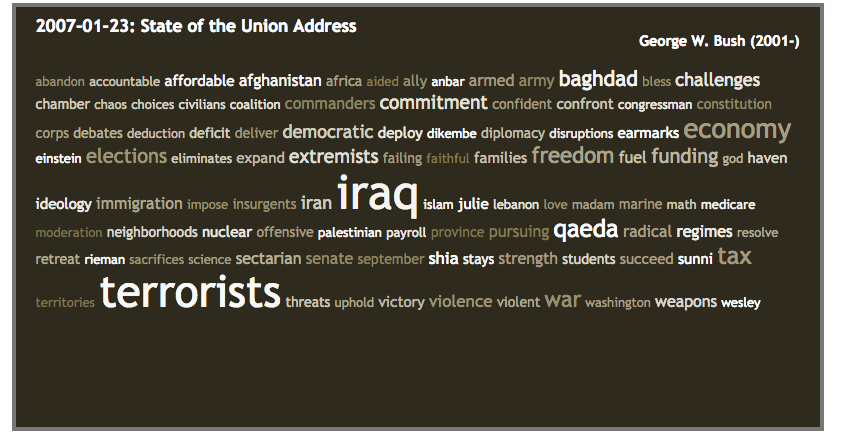
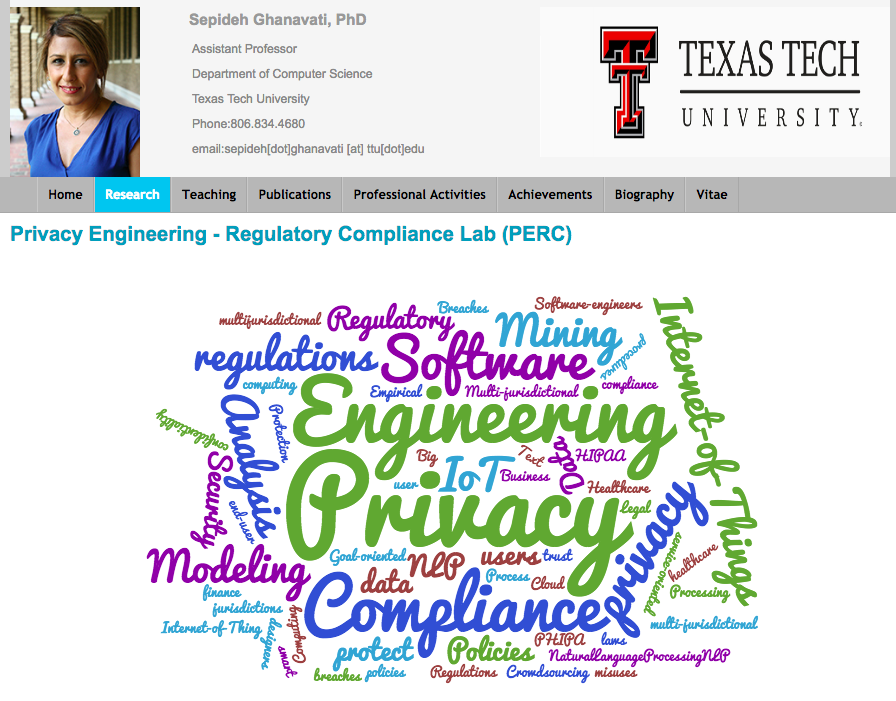
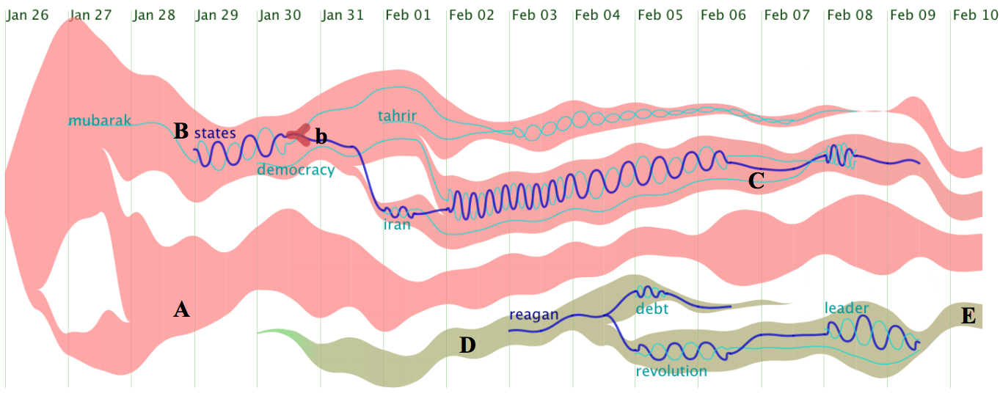
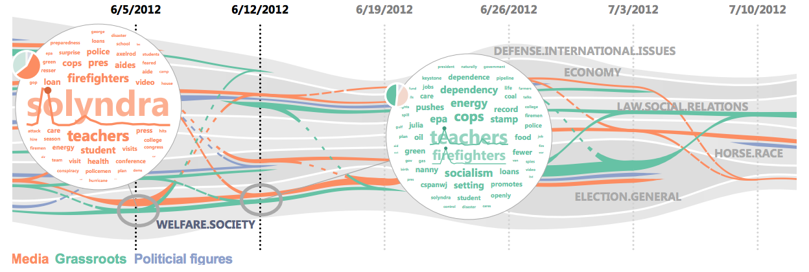
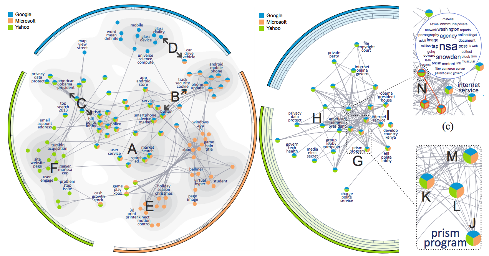

Wordle/WordCloud:
tagCrowd - http://www.tagcrowd.com/
US Presidential Speeches Tag Cloud (Top 100 Tags) from http://chir.ag/projects/preztags/

Wordle - http://www.wordle.net/ or https://tagul.com/create
The right world is for Declaration of Independence.


You can find Wordle on CS TTU faculty website (Prof. Sepideh Ghanavati)
or on the TTU Payroll site.

Papers:
TextFlow: Towards Better Understanding of Evolving Topics in Text

Visual Analysis of Topic Competition on Social Media

TopicPanorama: a Full Picture of Relevant Topics

© Last revised: Oct 6th, 2016